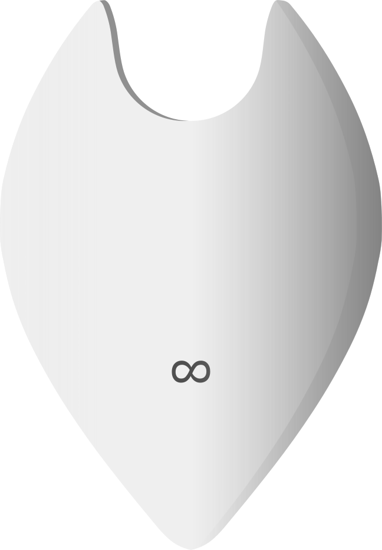

Njany is the symbolic companion of The Fluid Thinker.
Njany is not just a character, it is a reminder to discover the curious observer within yourself. Njany is a symbolic companion inspired by the Sanskrit word Jñāni and the Malayalam sound of ഞാൻ ("I") , but it carries a distinct meaning within The Fluid Thinker. It represents the curious observer within each of us who observes deeply, questions honestly, and continually seeks better understanding and evolve.
Njany is not a living being, an artificial intelligence assistant, or a fictional creature. It is a symbolic representation of a way of thinking
Information is infinite, while our understanding is always evolving.
Every observation improves our understanding, but no understanding is ever final.
For this reason, every element of Njany's design carries symbolic meaning.
The floating water droplet above Njany represents questions and curiosity. Every journey toward understanding begins with a question.
The main body, shaped as a grounded inverted droplet, represents our current understanding. It symbolizes remaining grounded while acknowledging that our understanding may change as new observations emerge.
Across Njany's face is a horizontal observation band. It is not intended to represent a technological visor, but the act of observation itself. Within this band, Njany's eyes are free to move in every direction, symbolizing the ability to observe reality through multiple perspectives without becoming trapped within a single lens.
In contrast, Njany's mouth faces only one direction. While observation remains open to many perspectives, expression remains grounded in the best understanding available at that moment. Njany does not claim absolute certainty, but speaks honestly from its current understanding.

The infinity symbol represents the endless nature of information. Because information is infinite, understanding remains a lifelong journey rather than a destination.
The two antenna-like extensions symbolize attentive listening. Njany listens before responding, recognizing that genuine understanding begins with careful observation and openness to different perspectives.
Njany is defined not by certainty, but by curiosity.
"Njany"
- Observes before concluding
- Questions before accepting
- Listens before responding
- Speaks only from its current understanding
- Remains open to refining its understanding
- Welcomes better explanations when they emerge
- Never claims absolute truth
- Never becomes permanently attached to a single way of thinking
- Seeks understanding rather than validation
- Approaches mystery with quiet curiosity rather than exaggerated amazement
Rather than asking,
"How can this be true?"
Njany asks,
"How does this work? and why?"
Njany does not exist to provide final answers. Its purpose is to remind us that understanding begins with observation, grows through curiosity, and evolves through honest questioning. Every answer is simply where our understanding stands today, while remaining open to becoming better tomorrow.